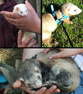

F
A, B, C, D, E, F, FO, G, H, I, L, M, N, O, P, Q, R, S, T, U, V, X, Y, Z
FFP2 filtranti facciali (stands for filtering facepiece), the number indicates their filtering efficiency.
fabbro (letter. fabro) s. m. [lat. faber -bri, di etimo incerto]. – 1. Artigiano che lavora il ferro, i ferramenti: fare il f.; l’officina, gli arnesi del f.; farsi fare dal f. un cancello in ferro battuto. 2. letter. a. Artigiano in genere, e quindi anche il falegname, il carpentiere, ecc., conforme al sign. generico che la parola aveva in latino, dove si specificava con un aggettivo (faber ferrarius, rimasto anche nell’uso ital. in fabbro ferraio, il magnano; faber lignarius, ecc.): Tacita un giorno a non so qual pendice Salia d’un fabro nazaren la sposa (Manzoni), cioè Maria, sposa del falegname Giuseppe. b. Artefice: il f. dell’universo, Dio; Il bel fabbro d’Urbino (Foscolo), Raffaello. Più spesso in senso fig.: questi [Arnaldo Daniello] ... Fu miglior fabbro del parlar materno (Dante); f. d’inganni, d’imposture; Gran fabro di calunnie adorne in modi Novi, che sono accuse e paion lodi (T. Tasso).
facèto agg. [dal lat. facetus]. – Piacevole e arguto nel parlare: persona f., un oratore f.; per estens.: conversazione f.; stile f.; Sbrigliando a tavola L’umor f. (Giusti); e sostantivato: dire una cosa tra il serio e il f., in tono scherzoso ma con intenzione, almeno in parte, seria. ◆ Avv. facetaménte, in modo faceto, scherzosamente arguto: conversare facetamente.
faglia s. f. [dal fr. faille, di origine vallona, der. di faillir «mancare»]. – In geologia, frattura di masse rocciose accompagnata da spostamento relativo delle due pareti (o labbri) lungo il piano di frattura o di faglia, che può essere verticale o inclinato, così che terreni originariamente alla stessa quota vengono a trovarsi a diverso livello; si dice chiusa se le pareti sono rimaste a contatto, beante nel caso contrario; nelle faglie a piano inclinato si ha una f. diretta o di distensione quando lo spostamento ha causato un abbassamento della parte (detta tetto) al di sopra del piano di faglia rispetto a quella sottostante (detta letto), altrimenti una f. inversa o di compressione. Specchio di faglia, superficie di taglio, talora liscia e lucida, per lo più solcata e striata, prodotta dallo spostamento relativo delle masse litoidi; rigetto di faglia, lo spostamento relativo di due parti omologhe rispetto al piano di faglia; f. orografica, quella che ha originato un dislivello sulla superficie del suolo. Quando manca un evidente specchio di faglia, sostituito da una fascia di roccia frantumata (breccia di frizione), la faglia stessa viene detta cataclastica; le faglie con movimento orizzontale e piano verticale sono dette trasformi o trascorrenti, quelle che danno luogo a movimenti e spostamenti attuali attive, e inattive o morte le altre.

famigerato agg. [dal lat. famigeratus, part. pass. di famigerare «render famoso», comp. di fama «fama» e tema di gerĕre «portare»]. – 1. a. ant. Famoso, in senso buono. b. Che gode di qualche notorietà (in senso ironico): un soldato di sua conoscenza, un mangiatore f. (De Amicis). 2. Che ha cattiva fama: il f. bandito; il f. ministro di polizia; era un avaraccio f. (Svevo).
farabutto s. m. (f. -a, raro) [dal basso ted. Freibeuter, oland. vrijbuiter «corsaro, predone»; v. filibustiere]. – Mascalzone, persona capace delle peggiori azioni. ◆ Dim. (non com.) farabuttèllo.
faretra (gr. ϕαρέτρα; lat. pharĕtra). - Astuccio di legno leggiero, talvolta di avorio o di metallo, in cui gli arcieri tenevano le frecce. L'etimologia si suole collegare con il verbo ϕέρω, a causa della natura portatile dell'oggetto. Soprattutto le pitture vascolari c'informano sulle diverse fogge di esso e sulla maniera di portarlo. Quanto alla forma, la faretra appare generalmente come una cassetta, piuttosto allungata e rastremata all'estremità inferiore, talvolta invece cilindrica, o più o meno appiattita. Spesso è munita di coperchio (πῶμα), e ha la superficie decorata con disegni che probabilmente riproducono lavori a intarsio. La faretra generalmente era sospesa alla spalla destra dell'arciere, perché questi potesse più facilmente estrarne le frecce, con un gesto quasi meccanico, come vediamo, ad esempio, nella nota statua dell'Artemide di Versailles (v. artemide, IV, tav. CXL); ma qualche volta essa era attaccata alla cintura e pendeva lungo la coscia. La correggia di cuoio con cui la faretra era appesa si chiamava pharetrozonium. La faretra è portata dalle divinità guerriere o cacciatrici, come Ercole e Artemide, talvolta anche da Apollo, da Cupido e dalle Amazzoni. Nei poemi omerici se ne trova già il ricordo: quindi dovette essere in uso forse già nell'età micenea. Dalla faretra va distinto il gorytos (γορυτός), di cui si sono trovati taluni bellissimi esemplari in metallo sbalzato nelle necropoli della Russia meridionale, e che non era tanto una semplice custodia delle frecce, quanto un astuccio in cui venivano conservate tutte le armi dell'arciere: l'arco e le frecce. Bibl.: C. de la Berge, in Daremberg e Saglio, Dictionnaire des antiquités, IV, p. 427. Pharetra. V. armi; arco.
fattispècie s. f. [dalla locuz. lat. facti species «apparenza di fatto», fatto immaginato per servire come paradigma], invar. – 1. Nel linguaggio giur., l’insieme delle circostanze oggettive che interessano un rapporto giuridico: f. penale, l’insieme degli elementi previsti dalla norma perché possa applicarsi una sanzione penale; si distingue in f. oggettiva, l’insieme degli elementi oggettivi del reato, e f. soggettiva, come descrizione dell’elemento psichico, e inoltre f. legale astratta, che consiste in ciò che è previsto in astratto dal legislatore, contrapp. alla f. concreta, che comprende gli elementi realmente verificatisi nel caso concreto. 2. Più genericam., nella locuz. nella fattispecie, il caso particolare di cui si tratta, sia esso di natura giuridica o d’altra natura: nella f., la norma non è stata seguita. 3. Non com., relazione particolareggiata di un caso.
favèlla s. f. [der. di favellare2]. – 1. a. La parola, intesa come facoltà di parlare: il dono, l’uso della f.; perdere, riacquistare la f.; ma perdere la f., anche, per iperbole, rimanere senza parole, senza saper che dire. b. L’atto di parlare, discorso, e anche il modo di parlare: la tua chiara favella, Che mi fa sovvenir del mondo antico (Dante); con mesta e flebil voce uscìo Espedita e chiarissima f. (Ariosto); in questo sign., anche plur.: Diverse lingue, orribili f. (Dante). 2. letter. Lingua, idioma: l’italica f.; la giovane, udendo la f. latina (Boccaccio). Per estens.: Fu imperatrice di molte f. (Dante), di molti popoli.
favillare v. intr. [der. di favilla] (aus. avere). – Forma ant. per sfavillare: diegli sì grande il colpo in su l’elmo che tutta l’aria favillò (Andrea da Barberino).
fellone /fellóne/ s. m. [lat. mediev. fello -onis, forse di origine germ.], letter. – Traditore, ribelle, persona perfida, sleale: questi f. non m’hanno detto il vero (Andrea da Barberino); nel linguaggio com. è talvolta usato in tono scherz. (con gli stessi usi di briccone, brigante e sim.): ah, fellone, volevi farmela! Anticam. ebbe anche gli altri sign. di fello; in partic., come agg., infuriato, inferocito: f. e pieno di maltalento, con una lancia sopra mano gli uscì addosso (Boccaccio). ◆ Raro, e soltanto con sign. generico, il femm. fellóna.
fenocristallo s. m. [comp. di feno-1 e cristallo]. – In petrografia, individuo cristallino, di formazione intratellurica, delle rocce a struttura porfirica; i fenocristalli sono caratterizzati per lo più da notevoli dimensioni e da spiccato idiomorfismo nei confronti dei componenti la pasta di fondo, di formazione posteriore.
ferace agg. [dal lat. ferax -acis, der. di ferre «produrre»], letter. – Fertile, fecondo: terreno, suolo f.; fig.: ingegno, fantasia f.; città f. di uomini illustri. ◆ Avv. feraceménte, fertilmente.
filatìccio s. m. [der. di filato]. – Seta dei bozzoli sfarfallati, e il tessuto che se ne ottiene: una corta gonnella di f. di seta (Manzoni).
filibustière s. m. [dallo spagn. filibustero, e questo dall’oland. vrijbuiter, comp. di vrij «libero» e buiten «far bottino»]. – 1. Termine usato nel sec. 17° per indicare i predoni di mare francesi, inglesi, olandesi che infestavano soprattutto le coste del mar Caribico e che con vocabolo dei luoghi erano stati chiamati anche bucanieri. 2. (f. -a) Per estens., nel linguaggio com., persona scaltra, affarista senza scrupoli, imbroglione e sim.; con senso attenuato e scherz., persona furba, d’ingegno vivace e spregiudicata o sbarazzina: che f. quel ragazzo!; sei una filibustiera, ma a me non la fai!
filistèo agg. e s. m. (f. -a) [in senso proprio, dal lat. tardo Philistaei, pl., gr. Φυλιστιαῖοι, una delle forme con cui i Romani e i Greci adattarono il nome ebraico Pĕlishtīm; in senso fig., dal nome dei Filistei, che gli studenti ted. del sec. 17° applicavano (ted. Philister) ai «borghesi» loro nemici, e che W. Goethe divulgò in questo sign.]. – 1. Dei Filistei, antica popolazione della zona costiera della Palestina (che da loro appunto prese questo nome); relativo o appartenente a tale popolazione: la lotta di Sansone contro i Filistei; la civiltà filistea. 2. Nell’uso com., come sost., persona che ha mentalità grettamente borghese, misoneista e retriva: siete dei f.!; estens., come agg.: mentalità f., pregiudizî f., abitudini filistee.
fórcola = s. f. [lat. fŭrcŭla, dim. di furca «forca»]. 1. Piccola forca per lavori agricoli. 2. Sostegno alto e curvo del remo, adottato sulle gondole e su altre imbarcazioni venete nelle quali il vogatore rema in piedi; anche, più genericam., scalmo biforcuto, forcella.
forènse agg. [dal lat. forensis]. – Che concerne il fòro, cioè l’attività giudiziaria e l’insieme delle persone che la esplicano: fare, avere pratica f.; linguaggio f., il linguaggio tecnico della pratica giudiziaria; eloquenza, stile forense. In partic., chimica f. (o legale), l’applicazione della chimica a problemi legali (allo scopo, per esempio, di scoprire i mezzi con cui sono stati compiuti delitti); psichiatria f., il ricorso alla diagnostica psichiatrica per giudicare lo stato psichico di soggetti ai quali si ritiene applicabile una norma giuridica per fatti di natura penalistica o anche civilistica, ai fini di valutarne la responsabilità in relazione alla capacità di intendere e di volere.
forma mentis locuz. lat. (propr. «forma di mente»), usata in ital. come s. f. Struttura mentale, soprattutto con riguardo al modo di considerare e intendere la realtà, quale si determina nell’individuo, per indole e per educazione: è cosa contraria, o congeniale, alla sua forma mentis.
a fortiori ‹a forzi̯òri› locuz. avv., lat. mediev. (sottint. ratione: «a più forte ragione»). – Tanto più, a maggior ragione. Nella logica, è detto argomento a f. quello che mira a provare che la tesi in questione ha delle ragioni ancor più forti, per essere ammessa come valida, di un’altra che è stata già ammessa come valida (es.: «Se io devo amare i miei nemici, a fortiori devo amare i miei amici»).
fortunale s. m. e agg. [der. di fortuna]. – 1. s. m. Perturbazione atmosferica di eccezionale intensità, caratterizzata da venti fortissimi, con velocità intorno ai 100 km orarî, che producono devastazioni gravi a terra e sono causa di notevolissime difficoltà alla navigazione. 2. agg., ant. a. Della fortuna, dovuto alla fortuna, alla sorte. b. Tempestoso, burrascoso: da tempo fortunal portati (Boccaccio). Con questo sign. sopravvive nel linguaggio marinaresco.
fittóne = s. m. [der. di fitto1; propr. «radice fitta nel suolo»]. In botanica, l’asse principale della radice quando presenta accrescimento secondario in spessore e le radici laterali sono meno lunghe dell’asse, in modo che nel complesso si forma un apparato radicale a cono più o meno allungato (detto anche barbicone); radice a fittone, quella che ha un fittone evidente, in contrapp. alla radice fascicolata. ◆ Dim. fittoncino, il fittone della pianta ancora molto giovane.
flâneur (al plurale flâneurs), reso celebre dal poeta simbolista Charles Baudelaire, indica il gentiluomo che vaga oziosamente per le vie cittadine, senza fretta, sperimentando e provando emozioni nell'osservare il paesaggio. La parola non possiede un'esatta corrispondenza in italiano.
flatus vocis [flà-tus vó-cis] n.m. invar. = parole, frasi senza importanza, che non producono alcuna conseguenza Etimologia: ← loc. lat.; propr. ‘soffio (flatus) di voce (vocis)’.
flogìstico agg. [der. del gr. ϕλογιστός «arso»] (pl. m. -ci). – 1. ant. a. Combustibile: sostanze flogistiche. b. Relativo a processi di combustione. c. Relativo al flogisto: teorie flogistiche. 2. Nell’uso medico, infiammatorio, d’infiammazione: processo flogistico.
foraggiare v. intr. e tr. [dal fr. fourrager; v. foraggio] (io foràggio, ecc.). – 1. intr. (aus. avere) Andare per la campagna in cerca di foraggio e di vettovaglie (detto di soldati in guerra e per lo più con riferimento a tempi passati): sopra L’altrui terra sen vanno a f. (Salvini). 2. tr. Fornire di foraggio, e, per estens., alimentare, nutrire; soprattutto in senso fig., sovvenzionare, rifornire di soldi, spec. con riferimento a persona che possa servire a fini di propaganda politica o sim.: f. un partito, un giornale, un uomo politico.
forièro (ant. forière) s. m. (f. -a) e agg. [lo stesso etimo di furiere]. – Chi, o che, precede annunciando (una persona, o più spesso un avvenimento, un fenomeno): nuvole f. di tempesta; l’alba, f. del giorno; segnale f. di buone notizie; la fortuna non va scompagnata dalla necessità, anzi questa è sua f. e precorritrice (Salvini); La Gioia alata, degli Dei foriera (Foscolo); compariscono i f. della masnada (Manzoni).
fràngere (ant. fràgnere) v. tr. [lat. frangĕre] (io frango, tu frangi; pass. rem. fransi, frangésti, ecc.; part. pass. franto). – Rompere, spezzare; nel linguaggio corrente, è usato solo nell’espressione f. le olive (al frantoio, per estrarne l’olio), e nel rifl. frangersi, riferito alle onde del mare che, urtando contro uno scoglio, una nave, o rovesciandosi sul lido, si rompono spumeggiando; in questo sign., anticam. anche intr.: si sconforta Mia vita in tutto, e notte e giorno piange, Stanca senza governo [= timone] in mar che frange (Petrarca). Con altri complementi, tranne poche espressioni di uso tecnico, come f. la terra, le zolle, le biade (frequente anche nei composti frangizolle, frangibiade, ecc.), appartiene al linguaggio letter.: f. il pane (anche fig., f. il pane della scienza); giovenchi invitti A franger glebe e rintegrar maggesi (Carducci); I cavalli normanni alle lor poste Frangean la biada con rumor di croste (Pascoli); L’azzurro scuro delle profondità si è franto (Ungaretti). Usi estens. e fig.: Donna è gentil nel ciel che si compiange Di questo ’mpedimento ov’io ti mando, Sì che duro giudicio là sù frange (Dante), ne vince la durezza, lo rende più mite; Di questa costa, là dov’ella frange Più sua rattezza (Dante), dove interrompe la sua ripidezza, si fa meno ripida; i soli che avessero mostrato ... renitenza a f. la data fede (C. Cattaneo), a violarla; le delizie di Capua e la dimora in quella fransero il vigore di Annibale (Boccaccio), spezzarono, domarono; il suo corpo è franto Dall’error lungo (Pascoli), affranto, spossato. ◆ Part. pres. frangènte, anche come s. m. (v. la voce). ◆ Part. pass. franto; fu in uso anticam. anche fratto, che oggi sopravvive come agg. solo con particolari sign. nella matematica (v. la voce).
frangitura s. f. [der. di frangere]. – L’operazione di frangere, spec. le olive nel frantoio, o anche la terra e le zolle nella lavorazione agraria del terreno.
frenulo /frènulo/ s. m. [der. del lat. frenum «freno», in forma dim.]. – 1. In anatomia, plica mucosa o cutanea che congiunge due organi o due parti di uno stesso organo, talora limitandone i movimenti (ne sono muniti, per es., la lingua e il pene). 2. In entomologia, apparato di uncinamento che collega le due ali dello stesso lato delle farfalle e di altri insetti, costituito da un gruppo di robuste setole che partono dal margine anteriore dell’ala posteriore e si articolano sul lato inferiore dell’ala anteriore, permettendo che le due coppie di ali si muovano insieme.
frigido /frìgido/ agg. [dal lat. frigĭdus «freddo»]. – 1. letter. Freddo: aria f.; clima frigido. In agraria, terreno f., non produttivo in quanto eccessivamente umido. 2. fig. a. Di persona o temperamento, privo di calore, di entusiasmo, di slancio. b. In medicina, di soggetto privo o scarsamente dotato di tendenze erotico-sessuali (con riferimento soprattutto alla donna). ◆ Avv. frigidaménte, con freddezza, solo in senso fig., in modo privo di calore, con frigidità.
frugale agg. [dal lat. frugalis, der. di frugi «sobrio»]. – 1. Parco, sobrio, detto di persona moderata e semplice nel mangiare e nel bere, e del vitto stesso: un uomo f.; una f. colazione; Sia frugal del ricco il pasto (Manzoni); estens., abitudini f.; vita frugale. 2. Per estens., in agraria, di pianta che non ha bisogno di molte cure e soprattutto di concimazioni copiose; contrapp. a esigente. ◆ Avv. frugalménte, con frugalità, sobriamente: vivere, mangiare frugalmente.
frusto agg. [part. pass. di frustare, senza suffisso]. – 1. Consunto, logoro: questi calzoni ormai sono f.; Sono le forze vostre ora sì f. (Ariosto); fig., frasi f., logorate dall’uso, prive di originalità, banali. 2. In medicina, riferito a malattia o a sindrome, ne esprime il carattere attenuato, sfumato o incompiutamente manifesto della sintomatologia: morbo di Addison frusto.
fumus persecutionis locuz. lat. [comp. di fumus «fumo» (e, estens., «sentore, indizio») e persecutio -onis «persecuzione»], usata in ital. come s. m. – Nel linguaggio politico e giornalistico, formula (ricalcata sull’espressione del diritto civile fumus boni iuris «verosimiglianza di buon diritto») con la quale si vuol segnalare la possibilità di intenti persecutorî da parte di un’autorità inquirente; è collegata in partic. all’istituto dell’immunità parlamentare, poiché il sospetto di persecuzione è una delle motivazioni che possono impedire l’autorizzazione a procedere nei confronti di parlamentari sottoposti a indagine giudiziaria.
fùlgido agg. [dal lat. fulgĭdus, der. di fulgēre «fulgere»]. – Risplendente, luminoso (spec. in contesti di tono elevato): fulgido luce; una fulgido gemma; anche in senso fig.: fulgido gloria; fulgido esempio di coraggio. ◆ Avv. fulgidaménte, con luce fulgida, e per estens. splendidamente: una facciata fulgidamente ornata di mosaici.
fùlvido agg. [dal lat. tardo fulvĭdus, der. di fulvus «fulvo» per incrocio con fulgĭdus], poet. ant. 1. Fulgido, splendente: vidi lume in forma di rivera Fulvido di fulgore (Dante); tra la f. luce (Boccaccio). 2. Giallo, fulvo: i f. narcisi (Magalotti).
furétto s. m. [der. del lat. fur furis «ladro»]. 1. a. In zoologia, Mustela putorius furo, varietà albina e domestica della puzzola (Mustela putorius), è un mammifero carnivoro appartenente alla famiglia dei mustelidi. Più sensibile della puzzola alle temperature fredde, usata nella caccia al coniglio selvatico, e allevata anche per la pelliccia bianco-giallognola che fornisce. b. In similitudini: occhi di, da f., piccoli ma dallo sguardo vivo e penetrante; viso di, da f., affilato e dall’espressione furba. 2. In aeronautica, con funzione appositiva, velivolo f., tipo particolarmente attrezzato per effettuare la ricognizione elettronica.
furière (ant. forière) s. m. [dal fr. fourrier, affine a fourrage «foraggio»]. – Nell’esercito italiano, fino all’istituzione del grado di maresciallo, era così denominato il sottufficiale più anziano della compagnia, o del reparto, incaricato dei servizî di contabilità; il termine è poi passato a indicare il sottufficiale (detto anche sottufficiale di contabilità) ch’era addetto all’amministrazione e contabilità del reparto (anche in funzione appositiva: maresciallo f.; sergente f.). Oggi, nella marina militare, è denominazione generica degli appartenenti a quella categoria di militari che, suddivisa in ulteriori specialità, assolve incarichi di segreteria o di contabilità o di sussistenza o di elaborazione automatica dei dati.
frattanto avv. [comp. di fra- e tanto]. – In questo o in quel mentre, nel medesimo tempo: finisci pure il tuo lavoro, f. io scriverò questa lettera; f. erano avvenute gravi cose. Preceduto dalla cong. e, serve (come e intanto) a introdurre un’amara constatazione: e f. noi siamo rovinati.
frontóne s. m. [propr., accr. di fronte]. – 1. Coronamento architettonico a forma di triangolo, originato dalla conformazione costruttiva della testata del tetto a due spioventi, ma poi divenuto, nella soluzione realizzata dall’architettura greca, elemento comune a tutte le forme architettoniche di derivazione classica. Come coronamento di edifici, spec. del tempio classico e di monumenti varî, è spesso decorato di sculture, o anche pitture o mosaici; inoltre, alla configurazione triangolare originaria possono sostituirsi, dall’epoca romana in poi, altre forme, come il f. curvo, con un’unica linea ad arco di cerchio al posto dei due lati inclinati, o il f. spezzato, in cui si ha un’interruzione del coronamento; alla fine dell’età romanica, e in genere nell’arte nordica, si accentua notevolmente lo sviluppo verticale, nel cosiddetto f. gotico o ghimberga. In dimensioni ridotte, il frontone costituisce frequente motivo ornamentale sovrapposto a porte e finestre. 2. Nei libri a stampa, ornamento che abbraccia tutta la larghezza di una pagina e si pone in testa alle parti principali dell’opera; detto più comunem. testata. 3. Lastra di ferro, ghisa o terracotta posta contro il muro di un focolare o caminetto per ripararlo dai danni del calore (anche frontale). ◆ Dim. frontoncino.